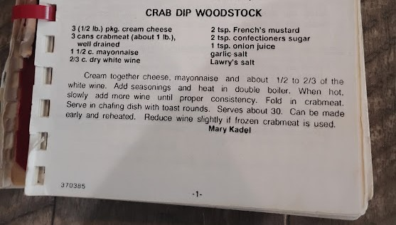

Mary Kadel whipped up this delicious dip for every big occasion.
Cream together cheese, mayonnaise and about 1/2 to 2/3 of the white wine. Add seasonings and heat in double boiler. When hot, slowly add more wine until proper consistency. Fold in crabmeat. Serve in chafing dish with toast rounds. Serves about 30. Can be made early and reheated. Reduce wine slightly if frozen crabmeat is used.
Editor's note: Mom and Dad would catch crabs in Heathsville VA and pick and freeze a pound of meat at a time. Once when I visited them there, they gave me this recipe and a bag of their precious frozen crab meat. But when I cooked it, it was really terrible. I finally figured out that the frozen lump they gave me wasn't crab meat at all, and, well, Sauerkraut Dip Woodstock wasn't what I was hoping for! :) - Ruth